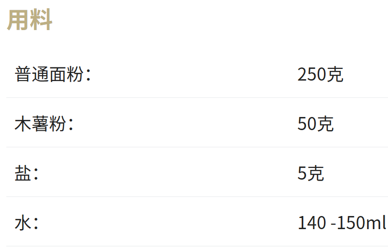
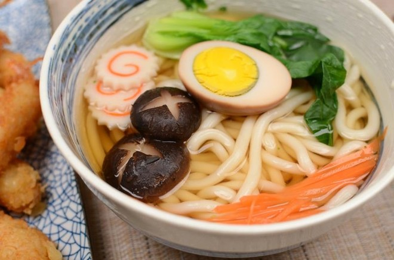

主食推荐
乌冬面
1.盐+水先稀释溶解至盐水！面粉+木薯粉混合，盐水分次加入面粉中搅拌均匀，揉成偏硬的面团！无需光滑，无干粉即可！装进保鲜袋醒面30分钟！
2.取出面团，用折叠法揉面，持续大概5-8分钟！直至面团光滑！，再放回保鲜袋醒面1小时！夏天或者不急着做可以放冰箱冷藏醒面，用时提前15分钟取出来回一下温！
3.取出面团，案板上撒上些淀粉防粘！先用擀面杖局部轻轻的按压，再轻轻的擀开！
4.擀成均匀的面饼，厚度大概3mm左右，其实厚度随自己喜欢，我连5mm都擀过，一样筋道
5.撒上一点淀粉防粘，借助刀子或滚刀切成自己喜欢的长、宽度！
6.水开下锅，煮沸后大概再煮8-10分钟，具体视面条的粗细自行调节！
7.出锅后过一次冷水，使面团更加筋道！
8.捞出面条，加上配料，完成！
2.取出面团，用折叠法揉面，持续大概5-8分钟！直至面团光滑！，再放回保鲜袋醒面1小时！夏天或者不急着做可以放冰箱冷藏醒面，用时提前15分钟取出来回一下温！
3.取出面团，案板上撒上些淀粉防粘！先用擀面杖局部轻轻的按压，再轻轻的擀开！
4.擀成均匀的面饼，厚度大概3mm左右，其实厚度随自己喜欢，我连5mm都擀过，一样筋道
5.撒上一点淀粉防粘，借助刀子或滚刀切成自己喜欢的长、宽度！
6.水开下锅，煮沸后大概再煮8-10分钟，具体视面条的粗细自行调节！
7.出锅后过一次冷水，使面团更加筋道！
8.捞出面条，加上配料，完成！

